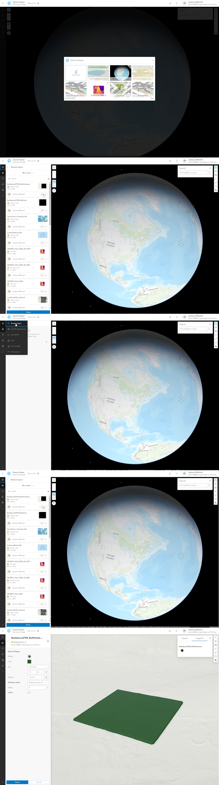
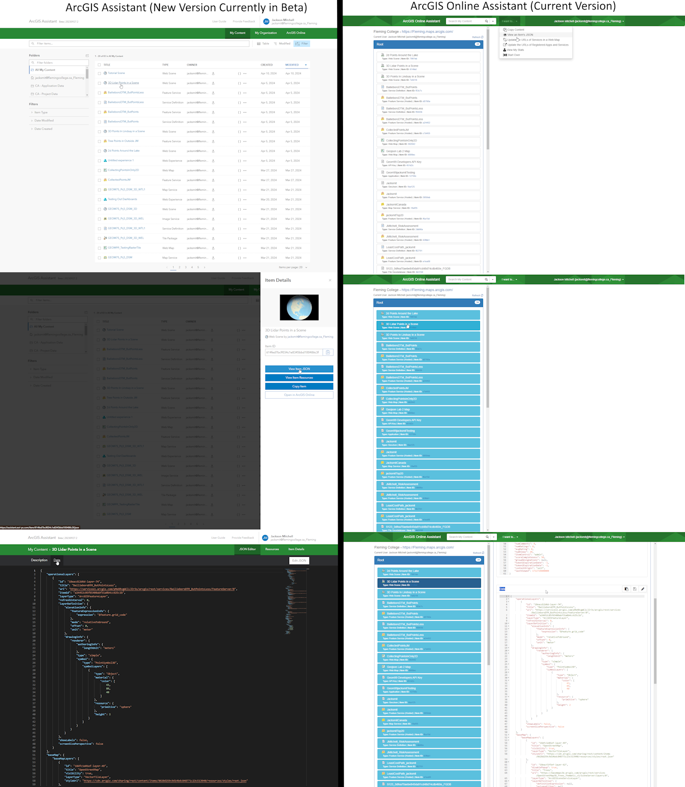
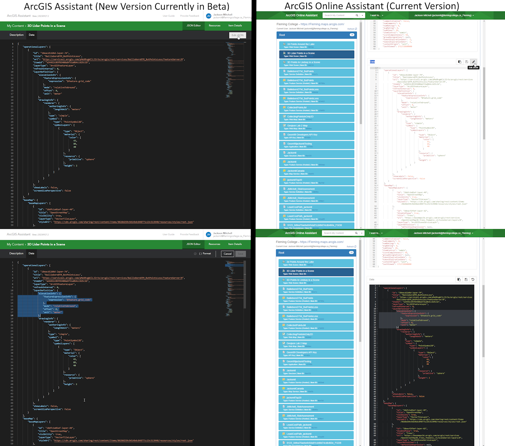
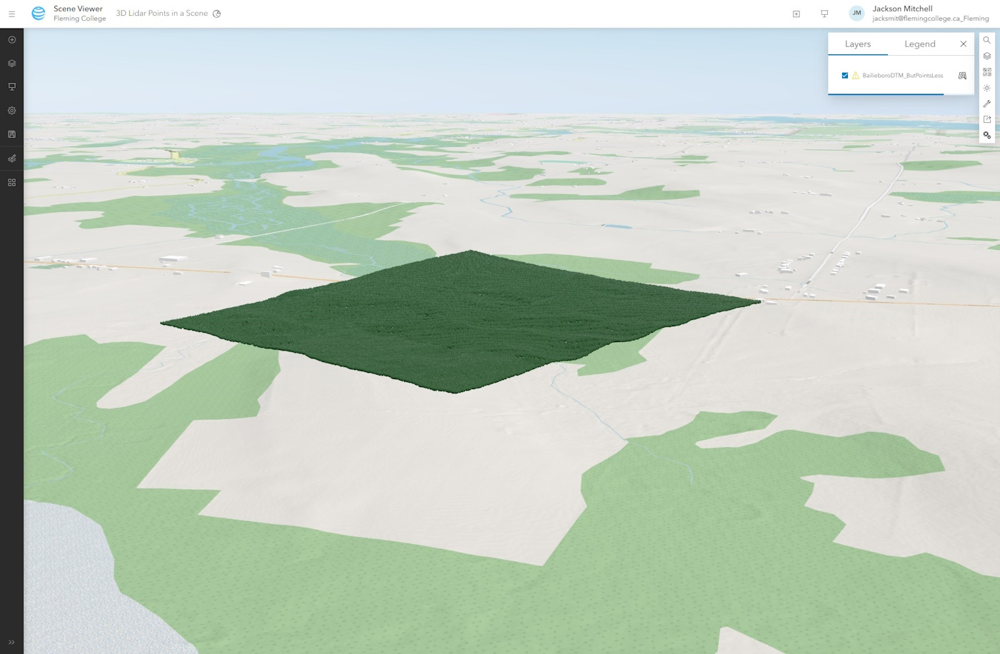

Solutions
Sample Solution
Below is a example solution of a web Integrated Scene View Of the Points Lux Collected Around Campus as well as two that Jackson collected for testings.
GIF of sample solution for when our ArcGIS Online Accounts are deleted for prosperity.

Scene Viewer Elevation Solution
Overview
For the process of showcasing how to display points in 3D using Scene Viewer and pulling the elevation data from a column within the point data, I will be using a sample of points taken form Lidar Data used in Remote Sensing II Project 3. I wont be going over Fully how I got the data into ArcGIS Online and focusing on getting it into a Scene and making it pull the elevation value in the scene from the desired column.
Step 1 - Adding your data to a new Scene
This is quite straight forward first open Scene Viewer from ArcGIS Online Main page Then following the following steps; Select create new scene. In the top left corner under the hamburger button select "browse layer" to see they layers on ArcGIS online you can add to the scene. find the layer you want to add then click the "Add +" button. This is the first step of adding your layer to Scene viewer. The Following images also show you this process in order.
Note: that the last image the Layer Style was changed to match future images and that if there are to many point in your feature layer it will not render when you first add your points in.
Part 2 - Setting your Elevation
First step before this is to save your Scene so that it generates a item that you can view in ArcGIS Assistant, next take a look at your Layer Style (2D and 3D both work) just to see the elevation mode and test to see if your layer has had its elevation set in the background. If you see no change that means the elevation value has not be set automatically for the feature layer and must be done manually. For my feature class done of the elevation modes work, hence the json for the feature layer inside the Scene Viewer item must be changed. To do this use ArcGIS assistant this website allows you to edit the json for your items in ArcGIS Online. The website can be found at the following link There are currently two versions of the website the current one and one that is in beta: ArcGIS Assistant (One in Beta) and ArcGIS Online Assistant (Older One). Once on one of the website log in and navigate your way to your Scenes Json Then Specifically the one with the header "Data".
Once there click on edit Json then navigate to the item named "elevationInfo". This is where we will tell the scene what variable to pull the elevation data from. Now make your elevationInfo match the following one with z being your z value field from your feature layer and mode being your mode of choice from the four options from the UI in Scene Viewer ("onTheGround", "relativeToGround", "relativeToScene", "absoluteHeight").
"elevationInfo": { "featureExpressionInfo": {"expression": "$feature.z"},"mode": "relativeToGround","offset": 0,"unit": "meter" }
One this has been changed save the json and head back to your scene and refresh the window. Now the elevation mode should be set to custom and your points elevation should now reflect that of the column you set it to.
Conclusion
Overall this solution does work and fits as a fix to our Problem statement but does have a lot of flaws associated with it. As any major changes to the symbology (2D > 3D or setting different visualization of Variables or different elevation mode) will result in having to repeat the process of editing the json or editing it in general. Also large amounts of points can cause issues with Scene viewer. Lastly scene viewer does not always working on all machines (google chrome in the labs). In conclusion we did end up finding a solution for collecting point data and displaying it in a 3D environment as well as showcasing an important piece of information about the elevation value in Scene viewer.